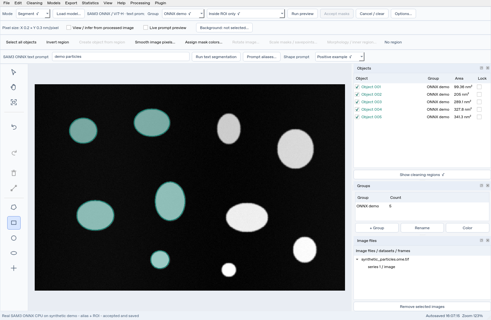

SAM3 ONNX: public text segmentation#
Choose this backend for SAM3 text segmentation without a Hugging Face login. It uses the public X-AnyLabeling v3.0.0 ViT-H export through an independently implemented ONNX Runtime adapter. It does not contain copied GPL application code. Model artifacts keep their upstream SAM terms; public availability is not an authentication bypass or a change to the license.
Install and select#
The standard CPU/GPU installers install the matching ONNX runtime automatically. For an existing dedicated environment that only needs the runtime repair:
python scripts/install_onnx_runtime.py --device cpu
Use --device cuda only in a dedicated non-base Conda GPU environment with
the CUDA 12.x/cuDNN 9 stack. The legacy Torch CUDA 11.8 plan installs CPU ONNX
while retaining native SAM1/2 CUDA support. The
helper replaces the conflicting CPU/GPU ONNX distribution when necessary;
these distributions share a Python module and should not both be installed.
Open an image and choose/create a Group.
Choose Load model… → SAM3 ONNX → ViT-H · text prompts.
Choose CPU or the configured NVIDIA CUDA device.
Leave the model path blank for first download, or Browse ONNX model folder….
Wait for verification and loaded model status.
The six model/sidecar files total about 3.53 GiB, plus a small CLIP tokenizer.
Downloads use public GitHub Release URLs and pinned SHA-256 values. Later loads
reuse verified files; interrupted downloads resume. Local folders need all six
files. For offline use, also place bpe_simple_vocab_16e6.txt.gz in the folder,
or retain the app’s verified tokenizer cache from an earlier download.
Text, aliases and ROI#
Set Segment → Prompt project, whole image. Enter black dots, click
Run text segmentation, inspect the preview and Accept masks. For the
bundled synthetic bright particles use white dots instead.
Use Prompt aliases… for project phrases such as nanoparticles → black dots.
The text tooltip shows the effective phrase. For an ROI, choose an area tool,
select Inside ROI only, draw the region and run text again. The app clips
output to the exact region; the encoder still uses whole-image context.


Genuine CPU inference with the public export, not native SAM3.1 and not a GPU benchmark. The synthetic example produced 10 whole-image masks; an alias and left-half ROI run accepted 5 masks, with no output outside the ROI. Counts do not establish general detection accuracy.
The image embedding is cached until pixels change; text features are cached for reused phrases. First-request time therefore differs from a cached prompt update. Each request still decodes masks and applies application filters.
Capabilities and limits#
Supported |
Unavailable in this export |
|---|---|
Text prompts, model scores, original-size masks |
Native point/shape-only prompts |
App aliases, score/area filtering, review/accept |
Native positive/negative shape concepts |
Exact ROI/inverse limits and accepted-object protection |
Single-object interactive path and automatic grid |
The UI disables unsupported scope/polarity choices. Clear old point/example prompts before running this text-only backend. Effective text must fit the export’s 32-token context (30 text tokens plus start/end); shorten long phrases or aliases if the app reports a context-limit error. There is no zero-token fallback. Original-image dimensions are preserved in returned masks.
For native geometric examples and combined text+shapes, follow the optional
SAM3.1 installation and
SAM3.1 prompt guide. A public SAM3 ONNX graph is not native SAM3.1
and cannot be used as sam3.1_multiplex.pt.
Check execution without Qt#
From the repository root in the installed environment:
python scripts/smoke_sam3_onnx.py --image examples/synthetic_particles.ome.tif --model-dir /path/to/sam3-onnx --text 'white dots' --device cpu --report /tmp/sam3-onnx-report.json
On Windows use a quoted Windows folder/report path. Omit --model-dir to
use/download the app cache. CUDA requests require a real CUDA provider; a
missing GPU provider or session fallback raises an error instead of reporting
CPU as GPU. CPU is validated in this cloud; Windows/CUDA paths require testing
on your target machine.
Files and provenance#
The supported release contains sam3_image_encoder.onnx,
sam3_language_encoder.onnx, sam3_decoder.onnx and their three .onnx.data
sidecars. Do not rename a random export to these names: the hashes and graph
contracts are specific to this release. The official CLIP BPE tokenizer is
included with MIT attribution; its vocabulary downloads separately and is
also verified. See sources and licenses.